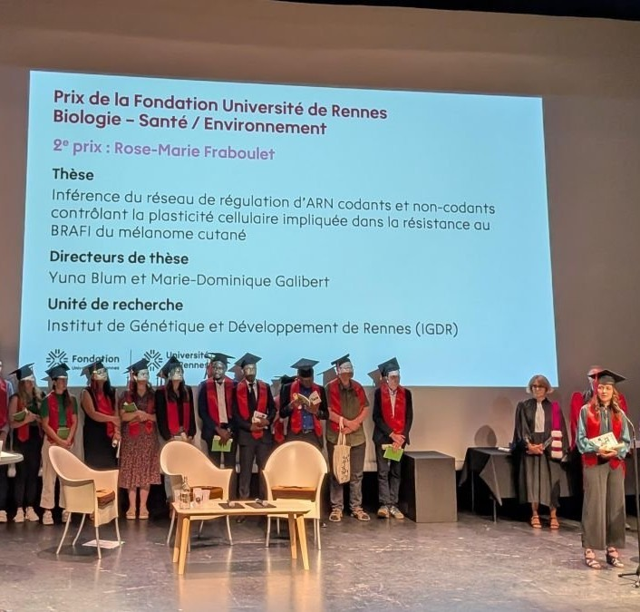
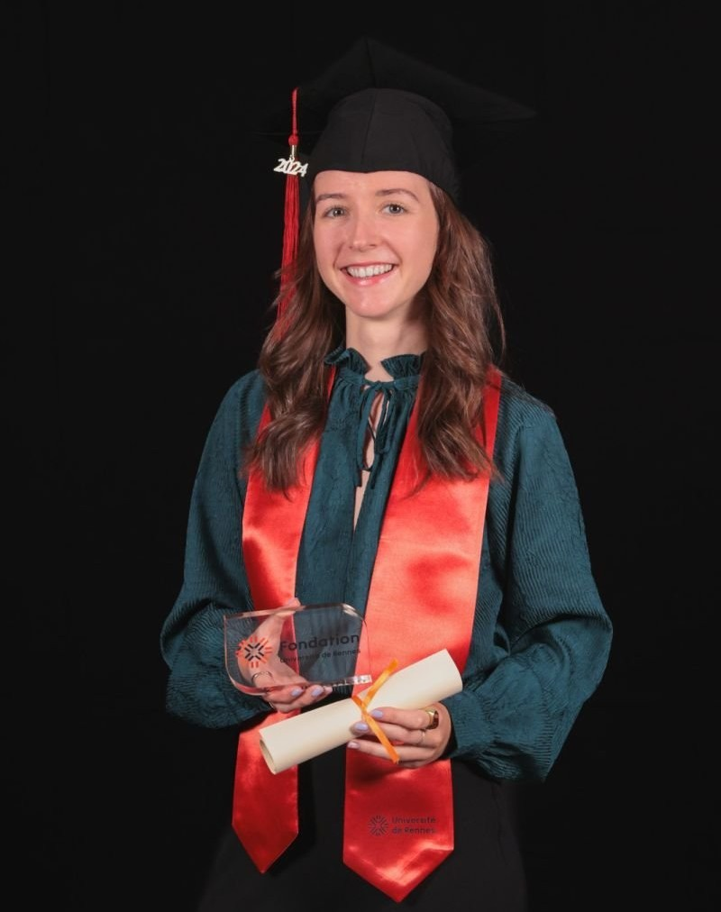
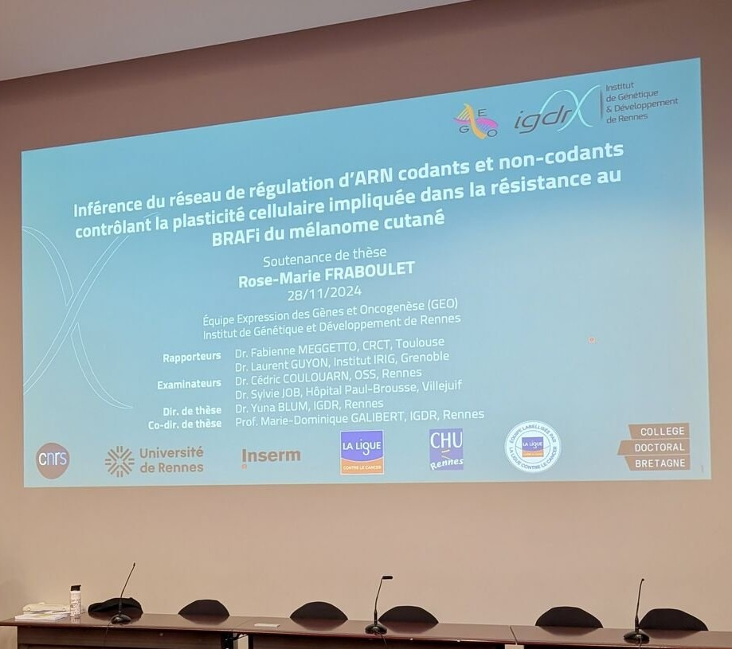
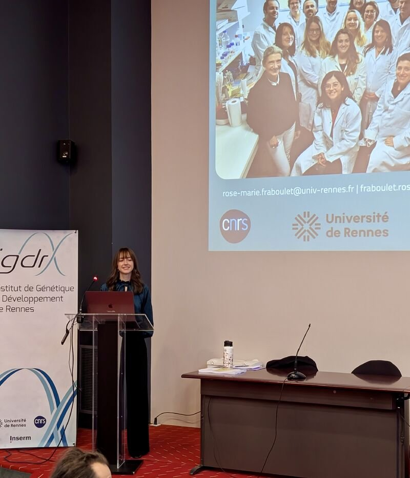
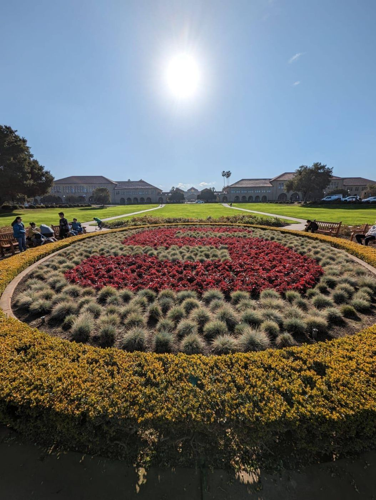
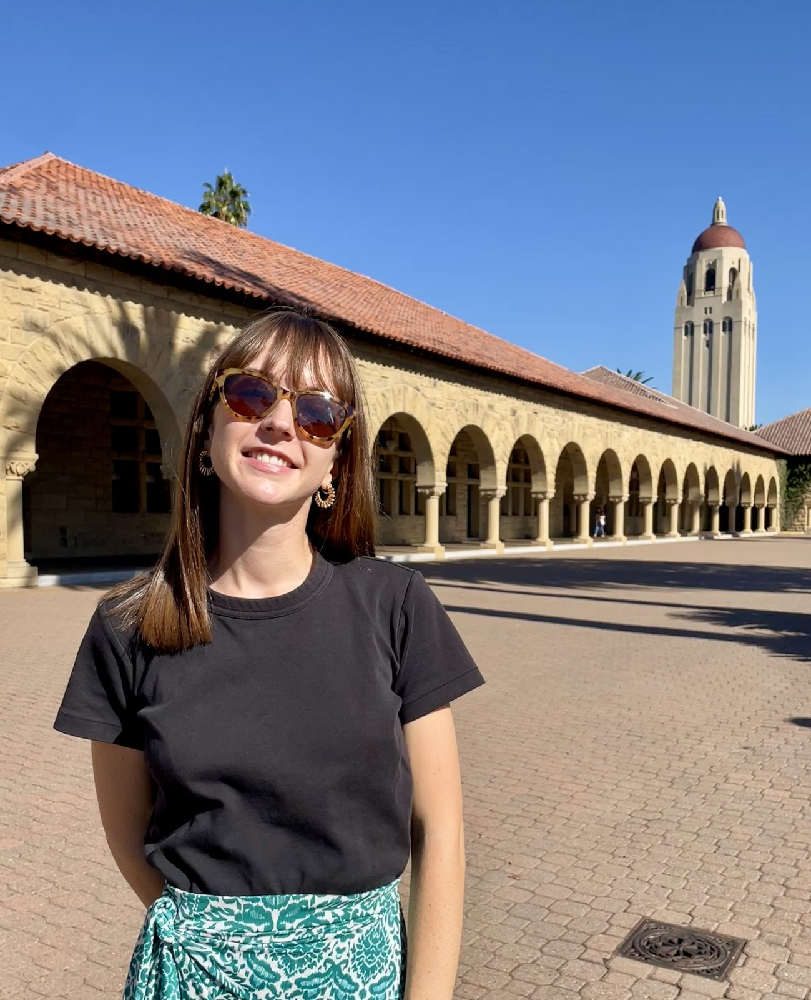
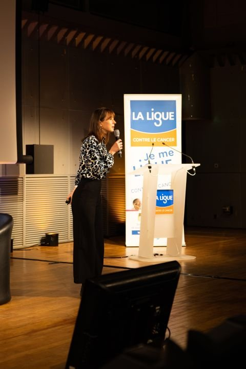

I'm excited to share my portfolio: a single-page site covering my background, projects and news, designed and built with Claude. A fun project outside of my usual day-to-day.
Source code: github.com/roma-rin/portfolio
Computational ScientistCollecteur Analyseur de Données · Paris, France

Since March 2025, I've been working at the Collecteur Analyseur de Données in Paris, where I build bioinformatics pipelines and evaluate AI tools for cancer data, from benchmarking ML tools to redesigning a tool that extracts information from clinical reports. Before that, my PhD focused on the regulatory networks behind melanoma treatment resistance, building Cirscan, a tool to infer and visualize circRNA regulatory networks from multi-omics data, work that led to a published scientific paper.
Curiosity has run through my path all along: from going on exchange in Poland and a research mobility at Stanford, to teaching and picking up new tools whenever a project called for it. These days that same curiosity goes into designing and building things outside of work too, like this portfolio, designed and built with Claude in HTML, CSS and JavaScript.
Computational Scientist
Collecteur Analyseur de Données · Paris, FR
PhD · Bioinformatics
Institut de Génétique et Développement de Rennes · Rennes, FR
MSc · Bioinformatics for Health
Université de Rennes · Rennes, FR
BSc · Science in Life
Université de Rennes · Rennes, FR
I'm excited to share my portfolio: a single-page site covering my background, projects and news, designed and built with Claude. A fun project outside of my usual day-to-day.
Source code: github.com/roma-rin/portfolio
On November 21, 2025, I received the 2nd prize in Biology, Health and Environment from the Fondation Université de Rennes, for my PhD thesis on the regulatory networks behind melanoma treatment resistance. A nice recognition of three years of work.


On November 28, 2024, I defended my PhD on the regulatory networks behind melanoma treatment resistance, with congratulations from the jury. A big thank you to my supervisors, Yuna Blum and Marie-Dominique Galibert, to the jury members, to the Ligue Nationale Contre le Cancer for funding these three years of research, and to everyone who supported me throughout.


I had the privilege to present and discuss my research, alongside renowned researchers, at the 24th Colloque de la Recherche organized by the Ligue Nationale Contre le Cancer: two enriching days of varied talks in the unique setting of the Couvent des Jacobins in Rennes. Many thanks to the Ligue for this opportunity, to all the donors, and to my team for their support throughout my thesis project.
Video summary of the colloquium, where I gave a talk on the role of circRNAs in cutaneous melanoma treatment resistance. Can you spot me? Around the forty-fifth second.
Many thanks to the e-BIGO association, the educational team and the students of the Rennes Bioinformatics Master's degree for inviting me to share my thesis experience. It was a pleasure to talk with the students and to compare my path with that of Nawad Hakim. All the best to the students in their future projects.
Starting 2024 with great news: my first scientific paper as first author has been published. Cirscan is an interactive Shiny application that automatically infers circRNA–miRNA–mRNA networks from human multi-level transcriptomic data, in order to identify potential sponge mechanisms active in a specific condition at large scale.
This project constitutes a significant part of my thesis. A big thank you to the GEO research team and collaborators for their contributions, with a special acknowledgment to the Ligue Nationale Contre le Cancer, which funded my thesis project.
Fraboulet et al. “Cirscan: a shiny application to identify differentially active sponge mechanisms and visualize circRNA–miRNA–mRNA networks”. BMC Bioinformatics, 2024. doi.org/10.1186/s12859-024-05668-y
I completed a four-month mobility as a Visiting Student Researcher at Stanford University, in Salzman's team. I'm grateful for the opportunity to dive into a renowned learning environment, connect with brilliant minds and gain both professional and personal experience, and to discover the Californian lifestyle and the beauty of the National Parks.
A big thank you to my research team, to the Collège Doctoral de Bretagne for their financial support, and to everyone who made this mobility possible.


I gave an oral presentation at JOBIM 2023, France's national bioinformatics conference, on the circRNA sponge mechanisms involved in melanoma treatment resistance. A nice milestone, presenting my PhD work to peers one last time before wrapping up.
No video replay available for this session.
I gave a talk titled "My thesis in 180 seconds" at the Journée Jeunes & Chercheurs organized by the Ligue Nationale Contre le Cancer, at the Cité des Sciences in Paris: a fun exercise in explaining three years of research on circRNA sponge mechanisms in melanoma treatment resistance in just three minutes. Many thanks to the Ligue Nationale Contre le Cancer for the opportunity, and to everyone who helped me prepare for it.

I presented a poster at JOBIM 2022 in Rennes, introducing Cirscan, the Shiny application I was building to decipher circRNA–miRNA–mRNA sponge networks from multi-level transcriptomic data. It was great getting feedback from the bioinformatics community on the tool.
I presented a poster at JOBIM 2021 (remote), sharing early results on identifying microRNA sponge mechanisms involving circular RNA in melanoma treatment resistance. Many thanks to my supervisors and the GEO team for their support on this, my first conference poster.